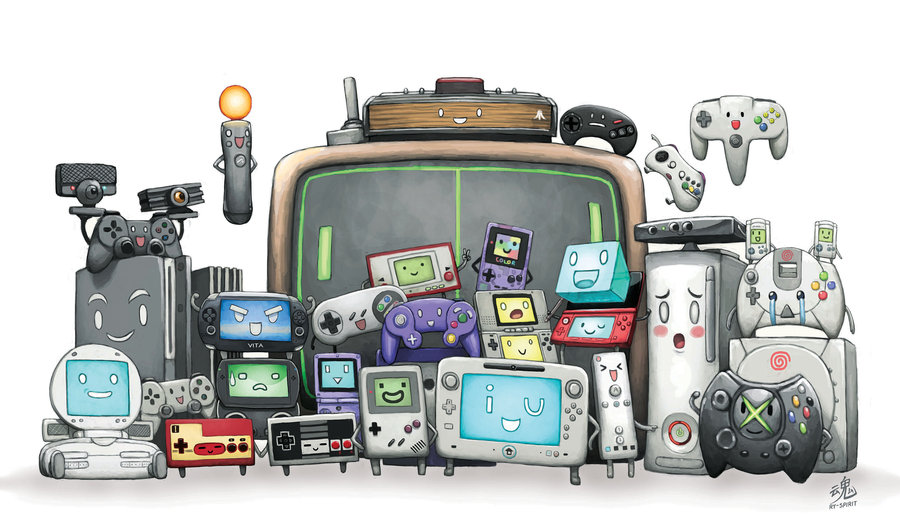
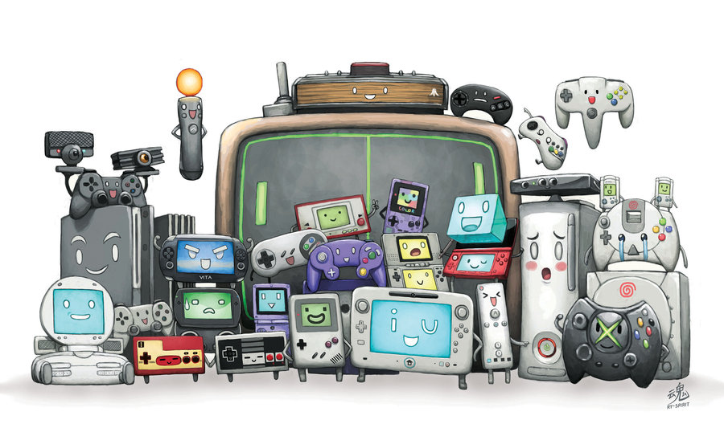

| Home | Anime | Anime Openings | 3DS Games |
 

The topics are anime, anime openings, and 3DS games.
All three of these things are my way of life.
These will be my personal opinions since it's still 2016.
For each topic, a picture and my opinion will be there, as well as a link to where you can learn more about each item.
Also, don't get offended just because your favorite wasn't on any of these lists.
It's still the year of 2016 so I might actually discover it, eventually.